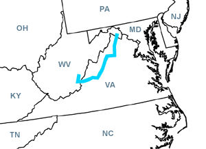

Day Four
Martinsburg, WV - Droop, WV
Date: 06/14/2002
Distance: 275 miles
Weather: Partly cloudy. Low 80's. Occasional sprinkles.
Up early from a not so good night's sleep at Pikeside Motel.
We headed south with a mission to explore the Shenandoah National Park. After asking if they gave discounts for cloudy days, we reluctantly handed over 10 dollars. Our fears came true. It was so overcast that all the views were completely covered in clouds. It made us use our imaginations.
We decided to get out early and take a quicker route to Hannah's. It was a good choice since we turned out to be running slightly late anyway.
Arrived at the Yew Mountain Lodge in Droop West Virginia around 3:30. A lovely cabin like lodge buried behind several twisty single lane roads.
After cleaning up we headed over to find Hanna at her home in Droop Mountain Battlefield State Park. From there we all went to the rehearsal dinner.